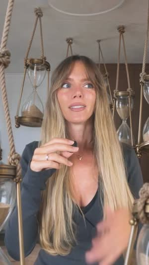

עורכים סרטונים
עם קלוד, מאפס
מדריך למי שלא ערך אף פעם סרטון ולא כתב שורת קוד. אתם מצלמים ונותנים הערות, וקלוד חותך, מתמלל, מוסיף כתוביות, זומים, אנימציות ואפקטי סאונד, ומחזיר סרטון מוכן לאינסטגרם או לטיקטוק.
המדריך מבוסס על תהליך עריכה אמיתי של כמה רילסים, כולל כל ההערות שהיו צריכות לחזור על עצמן עד שהתוצאה נראתה מקצועית. הכל מרוכז כאן כדי שתתחילו מהמקום שבו אנחנו סיימנו.
כתובית מתחת לפנים, מחוץ לאזורים המפוספסים שהאפליקציה מכסה
איך זה עובד בכלל
בתוכנת עריכה רגילה גוררים קליפים על ציר זמן. קלוד עובד אחרת: הוא כותב הוראות מדויקות למחשב, למשל "חתוך מ-3.2 עד 7.8 שניות, הגדל ב-5%, תציג את המילה 'שש' בשנייה 4.1". כל דבר מדויק לפריים, ואפשר לשנות פרט אחד בלי לשבור את השאר.
הדבר הכי חשוב להבין: קלוד לא צופה בסרטון כמו שאתם צופים. הוא מוציא ממנו תמונות בודדות ומסתכל עליהן, וקורא את התמלול של מה שנאמר. הוא לא מרגיש קצב, לא שומע אם בדיחה עובדת, ולפעמים מפספס קפיצה של פריים אחד. לכן העיניים שלכם, וההערות שלכם, הן מה שהופך טיוטה לסרטון טוב.
מילון קצר
המילים שתשמעו מקלוד, ומה הן אומרות.
שלב 0: מה צריך לפני שמתחילים
מחשב
מק עם מעבד אפל (M1 ומעלה) הכי נוח, כי התמלול רץ עליו מקומית ובחינם. גם במחשב Windows זה עובד, קלוד יתאים את הכלים. כדאי שיהיו לפחות 30GB פנויים, כי סרטוני 4K תופסים הרבה מקום.
מנוי לקלוד
Claude Pro או Max. עריכת סרטון היא עבודה ארוכה עם הרבה שלבים, ובמנוי הבסיסי תגיעו מהר למגבלת השימוש.
אפליקציית Claude למחשב, לשונית Code
מורידים מ-claude.ai/download, מתחברים, ועוברים ללשונית Code. זה Claude Code: הגרסה של קלוד שיכולה לעבוד עם קבצים במחשב ולהריץ תוכנות. בצ'אט הרגיל אי אפשר לערוך סרטונים.
תיקייה לעבודה
יוצרים תיקייה חדשה, למשל
video-studioבתוך תיקיית הבית, ובוחרים אותה כשפותחים שיחה חדשה בלשונית Code. לא על שולחן העבודה ולא בתיקייה שמסונכרנת ל-iCloud או ל-OneDrive: הענן מוריד קבצים למחשב רק כשצריך, והשיחה עלולה להיתקע.אישורים
בהתחלה קלוד יבקש אישור לפני כל פקודה. זה תקין. קראו את המשפט שמסביר מה הוא עומד לעשות ואשרו. אם משהו לא ברור, שאלו אותו "מה זה עושה?" לפני שמאשרים.
לא חובה: CapCut וכלי AI
CapCut אם רוצים לדייק ביד בסוף. כלים כמו Higgsfield, Kling או ElevenLabs רק אם תרצו קטעי AI או קריינות, ומחברים אותם בהגדרות של קלוד תחת Connectors. אפשר לגמרי לערוך סרטון טוב בלי אף אחד מהם.
את ההתקנות עצמן אתם לא עושים. כלי החיתוך, כלי התמלול ומנוע האנימציות מותקנים על ידי קלוד, אחרי שתדביקו את הפרומפט הראשון. הוא יסביר כל התקנה במשפט ויבקש אישור.
שלב 1: הפרומפט הראשון
פותחים שיחה חדשה בלשונית Code, בתיקייה שיצרתם, ומדביקים את כל הטקסט. קלוד יראיין אתכם, יכין את המחשב, ייתן רשימת הכנה ויסביר איך עובדים איתו. זה לוקח בערך חצי שעה, ועושים את זה פעם אחת.
אתה העורך והמורה שלי לעריכת סרטונים. אין לי שום ניסיון בעריכה ולא בקוד, אז תסביר הכל בעברית פשוטה, בלי מונחים טכניים (ואם חייבים, תסביר אותם במשפט). תתקדם צעד אחד בכל פעם ותחכה לתשובה שלי לפני שאתה ממשיך. המטרה: שנעבוד יחד כצוות עריכה. התפקיד שלי: לצלם, להביא את הרעיון והטעם ולתת הערות. התפקיד שלך: לחתוך, לתמלל, להוסיף כתוביות, זומים, אנימציות ואפקטי סאונד, ולייצא סרטון מוכן (ואם ארצה, גם פרויקט CapCut שאוכל לדייק בו ביד). תעבור איתי על השלבים האלה לפי הסדר: שלב 1: היכרות תשאל אותי עד 6 שאלות קצרות: איזה סרטונים אני רוצה לעשות (דיבור למצלמה, מדריך, סיפור), לאיזו פלטפורמה, באיזה אורך, אם יש לי סרטונים קודמים או רפרנסים שאני אוהב/ת (ומה בדיוק אני אוהב/ת בהם: כתוביות, קצב, אנימציות), אם יש לי צבעים, פונט או לוגו של מותג, ואם אני עובד/ת עם CapCut. שלב 2: הכנת המחשב תבדוק מה כבר מותקן אצלי ומה חסר כדי לערוך: כלי לחיתוך וידאו (ffmpeg), תמלול עברית מקומי וחינמי עם זמן לכל מילה (Whisper), ומנוע לכתוביות ואנימציות בקוד (Remotion), וכל כלי נוסף שאתה צריך. לפני כל התקנה תגיד לי במשפט אחד מה זה, למה צריך את זה וכמה מקום זה תופס, ותחכה לאישור. תעבוד רק בתיקייה הזו, ותוודא שהיא לא מסונכרנת לענן. בסוף תריץ בדיקה על קליפ קצר (אפשר שתבקש ממני להקליט 10 שניות) ותראה לי שהתמלול בעברית עובד. שלב 3: רשימת הכנה תכין לי צ'קליסט קצר וברור: - איך לצלם: אנכי, סאונד, אור, כמה מקום להשאיר מעל הראש ומתחת לסנטר. - מה לעשות כשאני טועה באמצע משפט. - איך לקרוא לקבצים ואיפה לשים אותם. - מה לשלוח לך עם כל סרטון: תסריט או נקודות, רפרנס, לוגואים, צילומי מסך או אתרים לאנימציות. שלב 4: איך עובדים בסבבים תסביר לי את סדר הגרסאות ומה אני בודק/ת בכל אחת, ואיך לתת לך הערות כך שתתקן בסבב אחד: טיימקוד או צילום מסך ממוספר, מה לא טוב, ומה אני רוצה במקום. שלב 5: כללים קבועים תכתוב את הכללים האלה בקובץ הוראות בתיקייה (CLAUDE.md), כדי שתזכור אותם גם בשיחות הבאות: - תמיד 9:16. חומר אופקי חותכים ומתאימים, אף פעם לא מכווצים או מותחים. - גרסה ראשונה = חיתוך בלבד, כדי שאאשר את התוכן לפני שמעצבים. - טייקים חוזרים: לוקחים את האחרון השלם והנקי. בלי התחלות שבורות ובלי זמן מת לפני המילה הראשונה של כל קטע. אל תסמוך רק על התמלול כדי למצוא חזרות, תבדוק גם לפי השקטים באודיו. - כתוביות: 2–3 מילים בכל פעם, לא מהירות מדי. ביטוי לא מתפצל בין כתוביות. אף פעם לא על הפנים, לא באזורים שהאפליקציה מכסה, לא מופיעות לפני שהמילה נאמרת, לא ממשיכות אחרי חיתוך לשוט הבא, ונגמרות בדיוק עם סוף הסרטון. - לא להפוך (מראה) צילומי סלפי. - לפני כל יצירה ב-AI שעולה כסף או קרדיטים: תראה לי את הפרומפט ואת העלות ותחכה לאישור. - כל תוספת (אנימציה, קטע AI, החלפת רקע) בשכבה נפרדת, כך שאפשר להוריד אותה בקלות. - לפני שאתה שולח לי גרסה: תבדוק בעצמך את הפריימים סביב כל חיתוך (קפיצות זום, כתוביות שנשארות, הבהובים) ותגיד לי מה בדקת. - כשאני מאשר/ת סגנון, תשמור אותו כברירת מחדל לכל הסרטונים הבאים. תתחיל בשלב 1.
למה הכללים בשלב 5 שם? כל אחד מהם נולד מהערה שחזרה על עצמה בעריכה אמיתית. אם כותבים אותם מראש, חוסכים סבבים שלמים של תיקונים.
שלב 2: מה להכין ואיך לצלם
0 מתוך 8
שלב 3: שולחים סרטון לעריכה
לכל סרטון חדש: גוררים את הקובץ לשיחה (או כותבים איפה הוא נמצא), ומדביקים את הבריף. שורות שאין לכם מה לכתוב בהן אפשר למחוק, וקלוד יחליט ויגיד מה בחר.
יש לי סרטון חדש לעריכה: [שם הקובץ או התיקייה] על מה הסרטון: [משפט אחד] הטקסט שתכננתי להגיד (אולי שיניתי קצת באלתור, זה בסדר): [להדביק] אורך יעד: [למשל 30–45 שניות] הוק פתיחה כתוב בפריים הראשון: [הטקסט, או "תציע לי 3"] מילים שחשוב להדגיש: [אם יש] אנימציות שאני רוצה ואיפה: [למשל "כשאני אומר/ת 'חיפשתי במייל' – חיפוש במייל מאחוריי"]. חומרים מצורפים: [לוגואים/צילומי מסך] צבע מותג: [קוד צבע או תמונה] מה המטרה: [למשל שיכתבו מילה בתגובות] תעבוד לפי הכללים שבקובץ ההוראות. תתחיל מגרסה של חיתוך בלבד, ותראה לי אותה לפני שאתה ממשיך.
שלב 4: עורכים בסבבים
הטעות הכי נפוצה היא לבקש הכל בבת אחת. בונים שכבה אחרי שכבה, ומאשרים כל שכבה לפני הבאה.
רק התוכן
בלי כתוביות ובלי עיצוב. בודקים: כל המשפטים שם ובסדר הנכון? אין משפט שחוזר פעמיים? אין זמן מת או מילה חתוכה בתחילת קטע?
הסגנון
בודקים קצב, גודל, מיקום והדגשות. כאן הכי כדאי להשקיע: כשהסגנון מאושר, מבקשים מקלוד לשמור אותו, ומהסרטון הבא הוא מתחיל משם.
זומים ומסגור
זומים עדינים, מירכוז הפנים, פחות תקרה ריקה. אם זה מרגיש קופצני, מבקשים "זום עדין יותר" או "גודל אחיד בין החיתוכים".
אנימציות, הוק וסאונד
אנימציות מאחוריכם או מעליכם, כותרת פתיחה, אפקטי סאונד מגוונים ושקטים. כדאי לבקש "לא עמוס": שתיים-שלוש אנימציות לסרטון של חצי דקה מספיקות.
קטעים מיוצרים
קטעי AI קצרים של 1–2.5 שניות שממחישים מילה עם קריצה. קלוד מציע איפה, מראה פרומפט ועלות, ומייצר רק אחרי אישור. מבקשים גם התאמת צבע, כי קטעי AI יוצאים לעיתים רוויים או צהבהבים.
איכות מלאה
מבקשים "רינדור סופי באיכות הכי גבוהה מהקובץ המקורי". בזמן העבודה קלוד מרנדר באיכות נמוכה כדי שיהיה מהיר, וזה בסדר. אם רוצים CapCut: סוגרים אותו לגמרי (Cmd+Q) לפני שקלוד מייצא אליו.
דוגמאות מסרטונים שערכנו
פריימים מתוך רילסים אמיתיים שנערכו כך עם קלוד, מצילום גולמי ועד גרסה סופית. ככה זה נראה כשכל השכבות מתחברות.




מקרה אמיתי: סרטון החשבוניות, מ-11 דקות ל-46 שניות
| סבב | מה ביקשנו | מה למדנו |
|---|---|---|
| חיתוך | "עדיין יש זמנים מתים, קטע שמתחיל ממילה חתוכה, ומשפטים שחוזרים על עצמם" | תמלול לבד מפספס חזרות מהירות. צריך לחתוך גם לפי השקט באודיו ולבחור את הטייק האחרון השלם. |
| כתוביות | "רוב קבוצות המילים ממורכזות, לא בצדדים". אחר כך: "בלי הצל המוגזם, ופחות רווח בין השורות" | כמה סבבים קטנים על הכתוביות משתלמים, כי אחרי האישור הם נשמרים לכל סרטון. |
| תנועה | "זומים קטנים מדי פעם, וכמה כתוביות מעל הראש, בשטח המת" | זום עדין מחליף זווית מצלמה. זום גדול מדי מרגיש כמו קפיצה. |
| שכבות | "אנימציה של חיפוש במייל, מאחוריי ולא מעליי", ואפקטי סאונד | אנימציה אחת לכל רעיון מרכזי, וצליל לכל פעולה באנימציה (הקלדה, קליק, דינג). |
| AI | "בקטעי ה-AI הצבע חזק יותר, תתאים לסרטון שלי" | כל קטע AI עובר התאמת צבע לפני שהוא נכנס. |
| הוק | "תן לי כמה דוגמאות סטטיות בגווני הירוק מדפי הנחיתה שלי" ובחירה באחת | לבחור מתוך תמונות זה מהיר יותר מלרנדר סרטון לכל ניסיון. |
| סופי | "האיכות קצת ירודה", "הפריים הראשון צהבהב", "ההוק נחתך באינסטגרם" | רינדור סופי מהקובץ המקורי ב-4K, איזון לבן, ובדיקה מול האזור הבטוח של אינסטגרם. |
הסיבה שהסרטון הראשון לקח 23 גרסאות היא שכל הכללים נבנו בדרך. הם כבר כתובים בפרומפט 1, אז אצלכם זה יהיה קצר בהרבה.
איך להעביר הערות
צופים בגרסה, ובכל מקום שמשהו מפריע עוצרים, מצלמים מסך (Cmd+Shift+4 במק), ורושמים. אחר כך שולחים לקלוד את כל צילומי המסך יחד עם רשימה ממוספרת.
- "משהו מרגיש לא טוב"
- "תעשה את זה יותר מגניב"
- "הכתוביות לא טובות"
- "יש קפיצה איפשהו"
- "0:04 – יש שנייה של שקט לפני 'אתם', תחתוך ממש לפני המילה"
- "תמונה 2 – הכתובית על הסנטר, תעלה אותה מעל הראש"
- "0:27 – קפיצת זום מיותרת, תוריד"
- "תמונה 5 – המשפט הזה חוזר פעמיים, תשאיר את השני"
הערות על הגרסה הזו (צילומי המסך מצורפים לפי הסדר): תמונה 1 / 0:00 – מה לא טוב: [...] / מה אני רוצה במקום: [...] תמונה 2 / 0:00 – מה לא טוב: [...] / מה אני רוצה במקום: [...] תמונה 3 / 0:00 – מה לא טוב: [...] / מה אני רוצה במקום: [...] באופן כללי לכל הסרטון: [למשל "פחות צל בכתוביות", "סאונדים יותר מגוונים"] אחרי התיקון, תבדוק אם יש עוד מקומות בסרטון עם אותה בעיה ותתקן גם אותם.
הערה כללית שווה יותר מעשר נקודתיות
אם אותה בעיה מופיעה בכמה מקומות, כתבו "באופן כללי" ובקשו מקלוד למצוא את כל המקרים. ככה זה הופך לכלל ולא לתיקון חד-פעמי.
אהבתם משהו? תגידו
"הגרסה הזו של הכתוביות מצוינת, תשמור את הדרך עבודה הזו" שווה בדיוק כמו הערה שלילית. קלוד שומר את זה לזיכרון, וזה חוסך את כל הסבבים בסרטון הבא.
לא בטוחים מה אתם רוצים? בקשו אופציות
"תראה לי 3–4 סגנונות להוק כתמונות סטטיות, בנפרד מהסרטון" מהיר וזול יותר מלרנדר סרטון שלם לכל ניסיון. וגם מותר להגיד "לא התחברתי, נשאיר מה שיש".
מה לבדוק בכל גרסה
אלה ההערות שחזרו הכי הרבה בעריכה אמיתית. עברו על הרשימה כשאתם צופים, ואם משהו מופיע, תעתיקו את המשפט לקלוד.
חיתוך
- זמן מת לפני המילה הראשונה של קטע
- קטע שמתחיל בחצי מילה
- משפט שמופיע פעמיים (טייק כפול שלא נחתך)
- הסוף נחתך מוקדם או נגרר
כתוביות
- מהירות מדי, לא מספיקים לקרוא
- מילה מופיעה לפני שאומרים אותה
- כתובית נשארת אחרי מעבר לשוט הבא
- על הפנים, על הסנטר או על המצח
- רווח גדול מדי בין השורות, או צל כבד מדי
- נחתכת על ידי הכפתורים של האפליקציה
- שם או מונח שתומלל לא נכון
מצלמה ותמונה
- קפיצות זום מוגזמות בין חיתוכים
- פריים אחד שקופץ או מהבהב בחיתוך
- הרבה תקרה ריקה מעל הראש
- צבע צהבהב או ירקרק
- קטע AI בצבע שונה מהשאר
- איכות נראית ירודה בגרסה הסופית
שכבות וסאונד
- אנימציה מסתירה את הפנים
- אנימציה נעלמת לפני החיתוך במקום יחד איתו
- כתובית יושבת על האנימציה
- אותו אפקט סאונד חוזר שוב ושוב
- סאונד לא מסונכרן עם מה שקורה במסך
- הקול שלכם חלש מדי
- כותרת הפתיחה נחתכת למעלה באינסטגרם
מלכודות שכדאי להכיר
מקום במחשב. כל רינדור וכל גרסה הם קובץ חדש, וסרטון 4K של כמה דקות יכול להגיע לכמה ג'יגה. אחרי שסיימתם סרטון, בקשו מקלוד "תמחק קבצי ביניים ותשאיר רק את המקור והגרסה הסופית".
ענן. קבצים שיושבים רק ב-iCloud או OneDrive נראים בתיקייה אבל לא באמת נמצאים במחשב, והשיחה נתקעת עליהם. תמיד לעבוד בתיקייה מקומית.
קרדיטים. כל יצירת AI עולה כסף. גם ניסיון שלא הצליח. זו הסיבה לכלל "פרומפט ועלות לפני כל יצירה".
פנים ב-AI. תמונות AI של אדם אמיתי לא תמיד יוצאות דומות. אם לא דומה לכם, בקשו מקלוד לנסות מודל אחר ולתת לו כמה תמונות קרובות שלכם מהסרטון עצמו.
CapCut פתוח. אם CapCut פתוח בזמן שקלוד בונה בו פרויקט, הפרויקט עלול להישבר או להשמיע אודיו של פרויקט אחר. סוגרים לגמרי, ואז אומרים לקלוד "סגרתי".
שיחה ארוכה מדי. אחרי הרבה סבבים השיחה מתארכת וקלוד מסכם אותה. זה תקין. אם הוא מתבלבל, פתחו שיחה חדשה וכתבו "ממשיכים את עריכת הסרטון בתיקייה X, הנה מה שנשאר לתקן".
הוא לא יודע מה הוא לא רואה. קלוד בודק תמונות בודדות, אז קפיצה של פריים אחד או סאונד שלא יושב בקצב יכולים לעבור לו. בקשו ממנו לבדוק את כל החיתוכים, ובכל זאת צפו בעצמכם בכל גרסה עד הסוף.